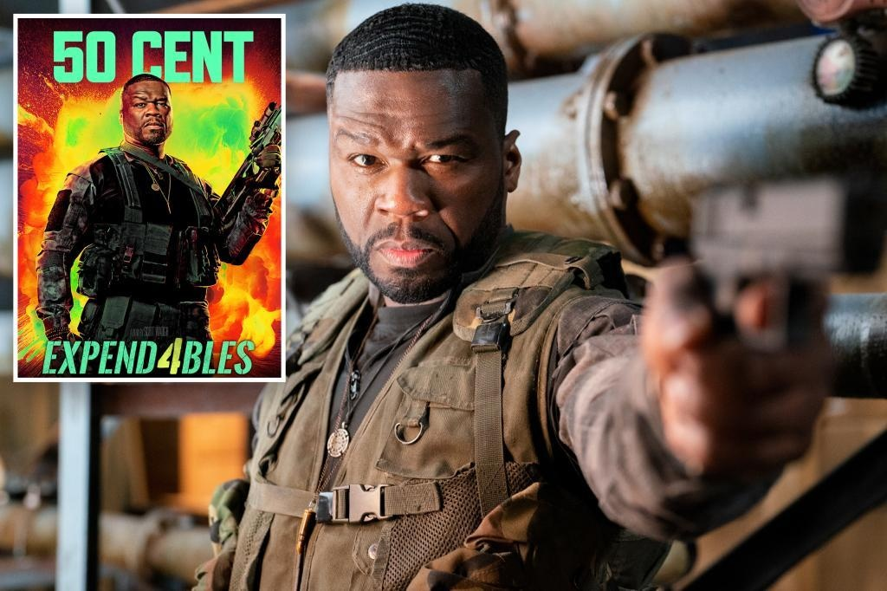

50 Cent angry over his appearance in 'Expendables 4' poster50 Cent isn’t feeling too hot about his “Expendables 4” poster. The “P.I.M.P.” singer is portraying the character Easy Day in the action flick, which will hit theaters on Sept. 22. “WTF did we run out of money?” he penned on social media alongside a shot of the poster. “Why my head look like it ain’t connected to my body,” he went on. “I bet they are gonna make [co-star Sylvester Stallone] look great. SMH.” Some fans joked about how he looked in the comments, with one fan scribing: “Looks like a mixtape cover from 2006.” “Nah that’s how your neck really look lol,” another person teased regarding 50’s physique. “Bruh, I was about to say, ‘What the hell did they do to your head?’ [This] looks like some copy-and-paste type s – – t,” someone chimed in. One noted: “[The] graphic designer must have been smoking some s – – t.” The “Expendables 4” stars an ensemble cast that includes Jason Statham, Stallone, Dolph Lundgren, Megan Fox, Andy Garcia and Randy Couture. The “Rocky” actor, 77, declared that the fourth movie would be his last turn as his “Expendables” character, Barney Ross, in October 2021. “It’s time to be moving on,” he shared with fans in an Instagram video at the time. Stallone was posting during his final day of filming the action film. “This will be my last day, so I’m enjoying it, but it’s always bittersweet, you know, when something you’ve been so attached to, I guess it’s been about 12 years,” the “Rambo” star added. “I’m ready to pass the baton on to Jason [Statham] and his capable hands.” The “Expendables” franchise began in 2010, with the parent film directed and co-written by Stallone. Two sequels were released in 2012 and 2014, respectively, with new A-listers joining the crew like Jet Li, Terry Crews, Bruce Willis and Arnold Schwarzenegger. The series follows a group of mercenaries who carry out missions such as assassinations and rescues. |
 |